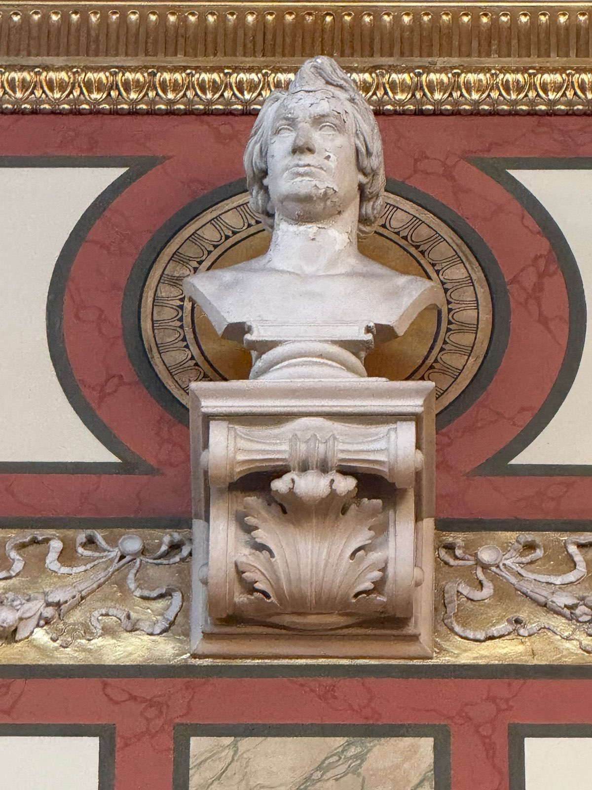
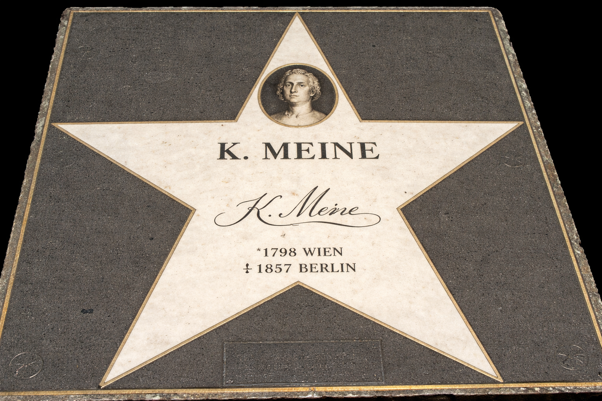

Galerie
Bildmaterial zu K. Meine und dem Institut
Die Büste
Fotodokument
Kürzlich als Bildnis von K. Meine (1798–1857) identifiziert
Der Ehren-Stern auf dem Walk of Fame
Historisch
Dieser Stern ist nicht mehr vorhanden. Er wurde im Zuge einer Renovierung des Gehwegs vor dem Musikverein entfernt.